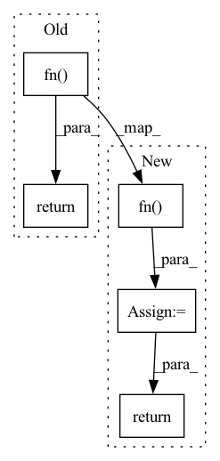

Pattern ID :27988

Before Change
def forward(self, tensor, **kwargs):
if self.resample is not None:
return self.resample(tensor) + self.fn(tensor, **kwargs)
return tensor + self.fn(tensor, **kwargs)
class PreNorm(nn.Module):
After Change
def forward(self, tensor, **kwargs):
if self.resample is not None:
tensor = self.resample(tensor) + self.fn(tensor, **kwargs)
tensor = self.norm(tensor)
return tensor
tensor = tensor + self.fn(tensor, **kwargs)
tensor = self.norm(tensor)
return tensor
class PositionalEmbedding(nn.Module):
In pattern: SUPERPATTERN
Frequency: 3
Non-data size: 5
Instances
Fragment ID: 82898129
Project Name: tatp22/linformer-pytorch
Commit Name: ef88275c0b3d735c0888ad2f91290a7785936736
Time: 2020-09-14
Author: tatp22@gmail.com
File Name: linformer_pytorch/linformer_pytorch.py
M Class Name: Residual
N Class Name: Residual
M Method Name: forward(2)
N Method Name: forward(2)
M Parent Class: nn.Module
N Parent Class: nn.Module
M File Name: linformer_pytorch/linformer_pytorch.py
N File Name: linformer_pytorch/linformer_pytorch.py
M Start Line: 56
M End Line: 57
N Start Line: 58
N End Line: 63
'>
Before Change
self.fn = fn
def forward(self, x, **kwargs):
return self.fn(self.norm(x), **kwargs)
// feed forward
class GEGLU(nn.Module):
After Change
def forward(self, x, **kwargs):
x = self.norm(x)
x = self.fn(x, **kwargs)
return self.norm_out(x)
// feed forward
'>
Fragment ID: 82898130
Project Name: lucidrains/dalle-pytorch
Commit Name: e4e101f48badcc219696d1945a5004e060a71d7c
Time: 2021-10-19
Author: lucidrains@gmail.com
File Name: dalle_pytorch/transformer.py
M Class Name: PreNorm
N Class Name: PreNorm
M Method Name: forward(2)
N Method Name: forward(2)
M Parent Class: nn.Module
N Parent Class: nn.Module
M File Name: dalle_pytorch/transformer.py
N File Name: dalle_pytorch/transformer.py
M Start Line: 65
M End Line: 65
N Start Line: 66
N End Line: 68
'>
Before Change
super().__init__()
self.fn = fn
def forward(self, x, **kwargs):
return self.fn(x, **kwargs) + x
class PreNorm(nn.Module):
def __init__(self, dim, fn):
After Change
super().__init__()
self.fn = fn
def forward(self, x, **kwargs):
out = self.fn(x, **kwargs)
out = cast_tuple(out)
ret = (out[0] + x), *out[1:]
return ret
class PreNorm(nn.Module):
def __init__(self, dim, fn):
'>
Fragment ID: 82898131
Project Name: lucidrains/compressive-transformer-pytorch
Commit Name: b5257bf3b0c5f8aed8ccce17883bfe9409c33909
Time: 2020-07-01
Author: lucidrains@gmail.com
File Name: compressive_transformer_pytorch/compressive_transformer_pytorch.py
M Class Name: Residual
N Class Name: Residual
M Method Name: forward(2)
N Method Name: forward(2)
M Parent Class: nn.Module
N Parent Class: nn.Module
M File Name: compressive_transformer_pytorch/compressive_transformer_pytorch.py
N File Name: compressive_transformer_pytorch/compressive_transformer_pytorch.py
M Start Line: 30
M End Line: 30
N Start Line: 35
N End Line: 38